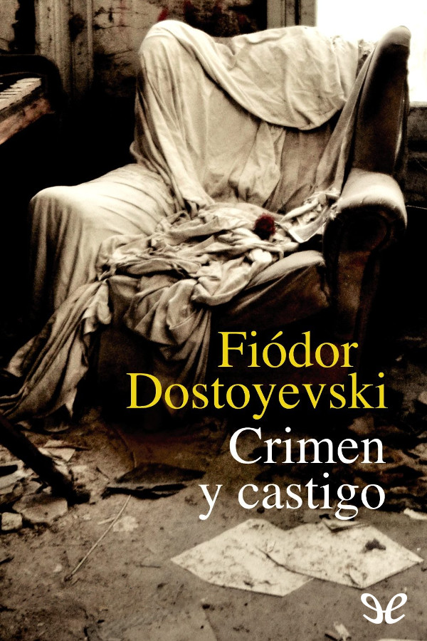

Crimen y castigo
Autor:Fiódor Dostoyevski
Crimen y castigo es una novela de carácter psicológico escrita por el autor ruso Fiódor Dostoievski. Es una de las más influyentes e internacionales de la literatura rusa. La historia narra la vida de Rodión Raskólnikov, un estudiante en la capital de la Rusia Imperial, San Petersburgo.
Precio: $5900
Volver al catálogo